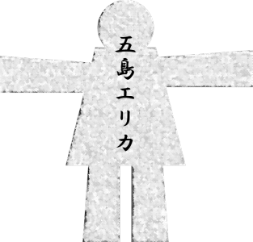
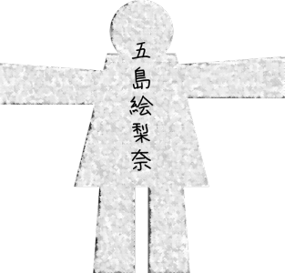

This scene is not unlocked yet in your progress
Shared Murder

"Well then, shall we begin? Anyone who wants time to think?"


"Ah, sorry, I kinda want a little time..."
"Oh, me too, if possible..."
Riding on Haruka's lead, I raised my hand too.
"Oh, me too, if possible..."
Riding on Haruka's lead, I raised my hand too.

"I'd like to prepare a little too."
Goto looked like she grinned, but it was too dark to be sure.
Goto looked like she grinned, but it was too dark to be sure.

"Then let's start in 5 minutes."
Haruka had her arms folded, groaning, "Hmmm, hmmm."
Goto was fiddling with her phone.
She was probably searching for ghost-story material.
Haruka had her arms folded, groaning, "Hmmm, hmmm."
Goto was fiddling with her phone.
She was probably searching for ghost-story material.
Obaasan, Chiga-nee, and Obasan showed no sign of hesitating.
Maybe they were used to Arata's rules; it looked like they had prepared their stories in advance.
Maybe they were used to Arata's rules; it looked like they had prepared their stories in advance.

"I'm gonna hit the bathroom while I can!"
"Ah! Wait, Kana! I'm coming too!"
"Ooh, what's this? Haruka-chan, you're scared to go to the bathroom alone?"
"Ooh, what's this? Haruka-chan, you're scared to go to the bathroom alone?"

"As if!"
"Zat so, zat so! Then, Haruka-chan, you go first."
"Huh? We're not going together...?"
"There's no need to go pee together. Just be honest and say it: 'Kana-sama, I'm scared, so please come with me.'"
"Zat so, zat so! Then, Haruka-chan, you go first."
"Huh? We're not going together...?"
"There's no need to go pee together. Just be honest and say it: 'Kana-sama, I'm scared, so please come with me.'"
"Ngh...!
Hmph! I was just gonna go to be on the safe side, so I don't even need to go!"
"Hmm, well, don't blame me if you wet yourself!"
"Hmm, well, don't blame me if you wet yourself!"
Kana-chan looked a little disgruntled, but she headed for the bathroom alone.
"Ah, um, I'll go to the bathroom too.
Haruka, you need the bathroom too, right? Let's go together."
"Natsumi...!
"Natsumi...!

R-right!"
It's at times like this that I have to lend a hand.
It's at times like this that I have to lend a hand.
―That said...

"H-hey, we can't turn the lights on...?"
"We already turned off the living room lights... That means no making it bright till the contest's over, right?"
Walking through an old mansion deep in the mountains without a light is very, ve-e-ery atmospheric.
So atmospheric that beings who cannot exist may be drawn here as well... perhaps.
"We already turned off the living room lights... That means no making it bright till the contest's over, right?"
Walking through an old mansion deep in the mountains without a light is very, ve-e-ery atmospheric.
So atmospheric that beings who cannot exist may be drawn here as well... perhaps.

Where we arrived was the washroom.
Go through this washroom and there's the toilet.
"This is the toilet...?"
"Yeah, this is the toilet."
"I see, so this is the toilet..."
Go through this washroom and there's the toilet.
"This is the toilet...?"
"Yeah, this is the toilet."
"I see, so this is the toilet..."
The toilet―.
It is a delicate place where one relieves oneself, and at the same time, a space where one is promised solitude.
It is also a space that sometimes gives peace, and sometimes gives unease.
The washroom and the toilet door were modern, perhaps recently renovated, but that only brought a creepy Western-style mansion to mind.
It is a delicate place where one relieves oneself, and at the same time, a space where one is promised solitude.
It is also a space that sometimes gives peace, and sometimes gives unease.
The washroom and the toilet door were modern, perhaps recently renovated, but that only brought a creepy Western-style mansion to mind.

"Hey, Kana, you done yet?"
"Hold on! It's being really stubborn!"
"Crap..."
"Saying 'crap' in front of the toilet is so crude, Haruka-chan."
"Not that kind of crap!"
"Hold on! It's being really stubborn!"
"Crap..."
"Saying 'crap' in front of the toilet is so crude, Haruka-chan."
"Not that kind of crap!"
Even a crude conversation with Kana-chan brought a little relief to the wooden house in the dark of night.
At first I had come along for Haruka's sake, but I was starting to be overwhelmed by the creepiness too.
For example, if something were to happen here―.
Yes, like Kana-chan, who should have been in the toilet, suddenly vanishing.
At first I had come along for Haruka's sake, but I was starting to be overwhelmed by the creepiness too.
For example, if something were to happen here―.
Yes, like Kana-chan, who should have been in the toilet, suddenly vanishing.
"Hey, you done yet? If we take too long, Grandma's gonna get mad at us."
............ ............
"Hey, Kana! Can you hear me!?"
............ ............
"Hey, Haruka... Kana-chan is in there, right?"
............ ............
"Hey, Kana! Can you hear me!?"
............ ............
"Hey, Haruka... Kana-chan is in there, right?"
"Yeah, obviously!
She's... supposed to be..."
"Hey, you're really in there, right? I'm opening it, okay?"
............ ............
"I'm really opening it!"
............ ............
"I'm really opening it!"
The knob turned with a clack, and the door opened just a little.
"What the, she didn't even lock it? I'm opening it!"
"What the, she didn't even lock it? I'm opening it!"

"She's not here... The light's not even on..."
"M-maybe she snuck out the window?"
"What for...?"
"She's pulling a prank..."
Haruka slowly walked up to the toilet window.
"M-maybe she snuck out the window?"
"What for...?"
"She's pulling a prank..."
Haruka slowly walked up to the toilet window.
"Kyaaaaaaaaah!"
"Hyaaaaaaaaah pyo!"
"Hyaaaaaaaaah pyo!"


"Ahahahaha! Huge success!
Hey, hey, Haruka-chan, did you wet yourself?"
A small figure that hopped down from the ceiling.
"Ah... ah..."
"Haruka... I can't take any more...!"
"Ah, sorry... I didn't think you'd get that scared..."
A small figure that hopped down from the ceiling.
"Ah... ah..."
"Haruka... I can't take any more...!"
"Ah, sorry... I didn't think you'd get that scared..."

"―And so, the Potty Squad has returned!"

"That was some scream! Even we got startled!"
I never imagined she had come through the space above the ceiling and not the window.
Apparently the ceiling panels in this house come off easily.
I never imagined she had come through the space above the ceiling and not the window.
Apparently the ceiling panels in this house come off easily.
"Well, looks like everyone's warmed up nicely, so shall we get started?"
"Haruka, are you okay...?"
"Man, it's, like... I didn't even get time to think up a story..."
"Same... Nothing can scare me now..."
"Haruka, are you okay...?"
"Man, it's, like... I didn't even get time to think up a story..."
"Same... Nothing can scare me now..."
"Well then, I'll draw. Who'll be first..."
The paper dolls lay face down in front of Obaasan.
She chose the one at the far right end.
The paper dolls lay face down in front of Obaasan.
She chose the one at the far right end.
"Hmm... I see..."
Obaasan set the doll she had drawn in the middle of the table.
Obaasan set the doll she had drawn in the middle of the table.



Erika Goto
"Me, right off the bat."
Obaasan apparently still thought she was Goto.
"I was originally from outside. I moved here when I married in.
As you know, the Arata settlement is an insular place.
So a bride coming here is welcomed, but on the other hand, she's tested on whether she's fit for it."

"Mother, that story..."
"It's fine. Things like this ought to start with me, the head of the settlement."
"............"
Judging by Obasan's manner, it seemed Obaasan's story might be something that must not be told to outsiders.
"It's fine. Things like this ought to start with me, the head of the settlement."
"............"
Judging by Obasan's manner, it seemed Obaasan's story might be something that must not be told to outsiders.
―That was about 50 years ago now.

When I first came here, the previous Grand Witch greeted me.
The test, which Mifuyu-san went through too, is to survive in the mountains for a year without help from anyone.
In the Arata settlement, this is called the mountain seclusion.
In the Arata settlement, this is called the mountain seclusion.

As for why we do such a thing: the Arata settlement was originally a gathering of outcasts.
800 years ago, people fleeing from war moved to this remote land of Arata.
That was the beginning of the Arata settlement.
The residents have been trained for generations so they can live on their own strength.
800 years ago, people fleeing from war moved to this remote land of Arata.
That was the beginning of the Arata settlement.
The residents have been trained for generations so they can live on their own strength.
So anyone who wishes to marry in is given that ordeal as well.
Plenty of women can't bear an ordeal like that and run away.
But endure it to the end, and she's recognized as truly meaning to become one of Arata, and a woman who married in is given a higher standing than the men.
Well, everyone from Arata knows that much.
Plenty of women can't bear an ordeal like that and run away.
But endure it to the end, and she's recognized as truly meaning to become one of Arata, and a woman who married in is given a higher standing than the men.
Well, everyone from Arata knows that much.

But... back when I married in, there was one more... troublesome ordeal.
It was to kill a person who threatened Arata's existence.
Arata was a gathering of people who had run away, to begin with.
Long ago, they say, plenty of men in power came to attack this place.
So to stand against them, we needed to learn the art of killing people too.
It was to kill a person who threatened Arata's existence.
Arata was a gathering of people who had run away, to begin with.
Long ago, they say, plenty of men in power came to attack this place.
So to stand against them, we needed to learn the art of killing people too.
Around the time I took that ordeal, an official from the prefecture was due to come here for a survey.
Apparently, he was plotting a land grab on Arata.
The ordeal given to me was to kill that official and destroy the evidence.
The deadline was one week. Any method would do.
Apparently, he was plotting a land grab on Arata.
The ordeal given to me was to kill that official and destroy the evidence.
The deadline was one week. Any method would do.
I agonized over it. Not only killing a person, but destroying the evidence too.
That's a different thing from hunting beasts in the mountains.
If I did a half-baked job, the settlement itself would cease to exist.
But I wanted to be with my husband, no matter what.
That's a different thing from hunting beasts in the mountains.
If I did a half-baked job, the settlement itself would cease to exist.
But I wanted to be with my husband, no matter what.

I made up my mind and headed for the Iizawa prefectural capital, 2 hours from here by car.
All I had with me then was one nata.
The mountain seclusion had toughened my body, but could I really do it...?
At night, in front of the prefectural office, I lay in wait, sitting still in the car.
All I had with me then was one nata.
The mountain seclusion had toughened my body, but could I really do it...?
At night, in front of the prefectural office, I lay in wait, sitting still in the car.
―About 3 hours must have passed. The target appeared, alone.
If I charged him now with the nata raised, I could be with my husband.
If I charged him now with the nata raised, I could be with my husband.
But I couldn't work up the courage.
Killing a person to be with my husband.
Was that really the happiness I wanted?
But I had no other choice...
Killing a person to be with my husband.
Was that really the happiness I wanted?
But I had no other choice...
I got out of the car with the nata.
Luckily, the target was on foot, so I followed him on foot.
A place with as few passersby as possible.
Until he moved to one, I stayed quietly on the target's trail.
Luckily, the target was on foot, so I followed him on foot.
A place with as few passersby as possible.
Until he moved to one, I stayed quietly on the target's trail.

―Eventually, the target turned into the perfect alley.
No one passing by, and just one streetlight.
No one passing by, and just one streetlight.
But even if I killed him, I mustn't leave any evidence.
In that case, should I make it look like the work of a robber?
In that case, should I make it look like the work of a robber?
Then, a method that kept the crime as short as possible―
better to take the wallet before killing him than to rummage for it on the corpse.
Better still if the target handed over his wallet without my threatening him.
Better still if the target handed over his wallet without my threatening him.
I was barely 20 at the time.
If a young girl said she'd dropped her wallet and had no train fare, wouldn't he give her a little money?
If I swung the nata the moment he took out his wallet, I could get away at once.
I decided to go with this plan.
If a young girl said she'd dropped her wallet and had no train fare, wouldn't he give her a little money?
If I swung the nata the moment he took out his wallet, I could get away at once.
I decided to go with this plan.
"Um, excuse me..."
I hid the nata behind my back and called out, and the target turned around.
That was the first time I saw the target's face up close.
He was a smiling, kind-looking old man, as if goodness itself had taken shape.
I hid the nata behind my back and called out, and the target turned around.
That was the first time I saw the target's face up close.
He was a smiling, kind-looking old man, as if goodness itself had taken shape.
"What's the matter?"
"Ah... Um... my wallet... I lost it... and I can't get home... Train fare..."
Then, without hesitating, the target took his wallet out of his breast pocket.
I meant to strike at that moment, but his gentle face threw me.
"Ah... Um... my wallet... I lost it... and I can't get home... Train fare..."
Then, without hesitating, the target took his wallet out of his breast pocket.
I meant to strike at that moment, but his gentle face threw me.
"A young lady mustn't go walking about alone at this time of night.
Here, take a taxi with this."
What the target handed me was two 1,000-yen bills.
2,000 yen back then would probably be worth about 5,000 yen today.
What the target handed me was two 1,000-yen bills.
2,000 yen back then would probably be worth about 5,000 yen today.
"Wait, please! Such a large sum...!"
"Not at all. May God bless you."
Without even hearing my thanks, the target turned his back and started walking again.
"Not at all. May God bless you."
Without even hearing my thanks, the target turned his back and started walking again.
What am I hesitating for...! I have a dream, to be with my husband!
For that dream, you have to...!
For that dream, you have to...!
It no longer mattered whether it looked like a robbery.
I raised the nata and was about to fall upon the man.
That was when it happened.
I raised the nata and was about to fall upon the man.
That was when it happened.
"Grandpa!"
I heard a small boy's voice.
"Oh, Cha-bo! Did you come to meet me?"
The target scooped up the small boy who had run to him.
And beyond them, a woman who looked to be the boy's mother.
Seeing that, I couldn't move, as if my feet had taken root.
I heard a small boy's voice.
"Oh, Cha-bo! Did you come to meet me?"
The target scooped up the small boy who had run to him.
And beyond them, a woman who looked to be the boy's mother.
Seeing that, I couldn't move, as if my feet had taken root.
To destroy his happiness and―that small boy's, just so I could be happy...
And not only that. How many people had that man saved?
He even bestowed his kindness on a total stranger like me.
And not only that. How many people had that man saved?
He even bestowed his kindness on a total stranger like me.
I made up my mind and ran up behind the target.
"Um...!"
I hid the nata behind my back again.
"I found my wallet! I'll give this back to you!"
I held out the two 1,000-yen bills he had given me.
The target turned back toward me, still holding the boy.
"Um...!"
I hid the nata behind my back again.
"I found my wallet! I'll give this back to you!"
I held out the two 1,000-yen bills he had given me.
The target turned back toward me, still holding the boy.
"Oh, is that so? I'm glad to hear it.
But I've already given that to you."
"That's not it...! The truth is, I never lost my wallet at all―"
When I said that, the target's voice became even gentler.
"That's not it...! The truth is, I never lost my wallet at all―"
When I said that, the target's voice became even gentler.
"In that case, when someone truly in need appears before you, please give this to them."
"Huh...?"
"Taken by an honest person like you, these 2,000 yen must be content too. Well, then."
I couldn't say a word back, couldn't move my feet...
All I could do was watch the target go until he was out of sight.
"Huh...?"
"Taken by an honest person like you, these 2,000 yen must be content too. Well, then."
I couldn't say a word back, couldn't move my feet...
All I could do was watch the target go until he was out of sight.
―I stayed in the car like that, crying until morning.
There was no way I could go back now.
As an apology to my husband and the previous Grand Witch, I thought of dying alone.
But before that, I had to report.
In the morning sun, I went back to the Arata settlement.
There was no way I could go back now.
As an apology to my husband and the previous Grand Witch, I thought of dying alone.
But before that, I had to report.
In the morning sun, I went back to the Arata settlement.

The moment I reached the Arata settlement, a crowd of residents surrounded me.
I thought I was being blamed for failing the ordeal.
But everyone was smiling.
I thought I was being blamed for failing the ordeal.
But everyone was smiling.
―Well done.
―You did your best.
That's what they said to me.
―You did your best.
That's what they said to me.
According to them, the news had reported that the target was dead.
'Hacked to pieces with a large blade like a nata,' it said.
'Hacked to pieces with a large blade like a nata,' it said.
I decided to confess honestly to the previous Grand Witch.
No, I wasn't the one who did this.
Someone else just happened to kill that man.
I got down on my knees and bowed, apologizing for my own failure.
No, I wasn't the one who did this.
Someone else just happened to kill that man.
I got down on my knees and bowed, apologizing for my own failure.
But the previous Grand Witch said this.
"I see. To hide the fact that you killed him even from me... you are very good at keeping a secret. That is as it should be. You have passed the ordeal splendidly."
"N-no! I'm not the one who killed―"
"I see. To hide the fact that you killed him even from me... you are very good at keeping a secret. That is as it should be. You have passed the ordeal splendidly."
"N-no! I'm not the one who killed―"
"It is fine, that way. The one who knows you killed him is you alone.
I will keep this a secret as well."
is what she said.
Then who on earth killed him?
The clue was 'a large blade like a nata.'
is what she said.
Then who on earth killed him?
The clue was 'a large blade like a nata.'
That was when I realized.
Someone in this settlement had meant to kill him from the start.
Whether I killed him or not, it didn't matter either way.
Making me share the settlement's secret.
Keeping it to the end, that was the real ordeal.
Someone in this settlement had meant to kill him from the start.
Whether I killed him or not, it didn't matter either way.
Making me share the settlement's secret.
Keeping it to the end, that was the real ordeal.
"Of course, there's no such ordeal now.
But it does exist. Somewhere in this Arata, the fear and the will to fight that remove anyone who threatens it.
That's the end of my story."
Everyone's faces looked solemn rather than frightened.
It was a strange story rather than a ghost story.
It was a strange story rather than a ghost story.
"Obaasan, is this story true?"
"Well, it's only a ghost story, after all. I'll leave that to your imagination. Now, next."
With that, Obaasan chose the doll at the left end.
It seemed Obaasan's ghost story really ended with just that.
"Well, it's only a ghost story, after all. I'll leave that to your imagination. Now, next."
With that, Obaasan chose the doll at the left end.
It seemed Obaasan's ghost story really ended with just that.

Erina Goto
"Next is Goto-chan. Give us your very best one."
"Next is Goto-chan. Give us your very best one."